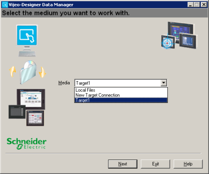
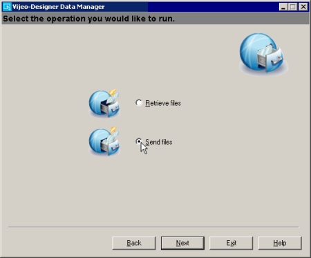
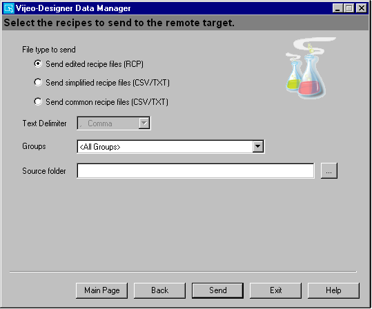
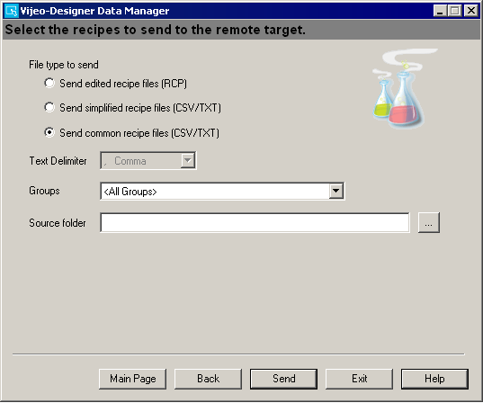

|
|
|
|
|
|
|
|
Data Manager can send one of the following:
When sending recipe files to the target machine, you may be required to type in the recipe's Project Identifier to access the recipe files. For more information on recipe Project Identifiers, see Recipe Project Identifier in Section 20.5.2.7, Data Manager Password Security.

Data Manager cannot add new recipe groups to a target. Data Manager can only update the target machine's existing recipe groups. To add a new recipe group to a target, you need to add the new recipe group to the project and then download the project to the target machine.
Start Data Manager.
In the Windows Start menu, point to Programs, Schneider Electric, Vijeo Designer, Tools, Vijeo Designer Data Manager, and click Vijeo Designer Data Manager.
On the main page, use the Media drop-down list to select the target machine to connect to and then click Next.
If you want to create a new target to connect to, see Section 20.5.2.1, Creating a Target Connection.

Select Send files and click the Next to connect to the target.

The Data Manager connects to the target and displays the window to send files.
In the window to send recipe files (.rcp), select Send edited recipe files and then use the Groups drop-down list to select the recipe group you want to replace on the target.

In the Source file field, specify the location of the recipe group that you want to send to the target, or click the ellipsis button to use Windows Explorer to specify the location.
Click Send to send the recipe group to the target.
Once Data Manager begins sending, the Data Transfer Status window appears and shows the sending status. For more information, see Section 20.5.2.8, Data Transfer Status.
When sending .csv or .txt files, the following recipe information is converted during the send operation: Recipe Name, Recipe ID, Access Right, Recipe Labels (language IDs and label text), Ingredient Name, and Recipe Value.
After the send, the recipe data in the .csv or .txt file replaces all the recipe data in the recipe files for the specified recipe group and are sent to the target machine.
Start Data Manager.
In the Windows Start menu, point to Programs, Schneider Electric, Vijeo Designer, Tools, Vijeo Designer Data Manager, and click Vijeo Designer Data Manager.
On the main page, use the Media drop-down list to select a target and then click Next.
Select Send Files and then click Next.
In the window to send files, select the Send simplified recipe files (CSV/TXT) or Send runtime recipe files (CSV/TXT) option, recipe group, and source file.
If you select simplified recipe files, the recipe .csv file will be sent to the target in the simplified recipe format. If you select common recipe files, the recipe .csv file will be sent to the target in the common recipe format.
If you want to convert multiple .csv files, select All Groups from the Groups drop-down list, set the Text Delimiter to Comma, and select a folder from the Source Folder property. When you set Groups to All Groups, the Source File property changes to Source Folder. For the Source Folder, make sure you select the folder that includes all targeted recipe groups. For example, you may want to select the Recipe folder instead of the Recipe Group folder if you want to work with all recipes.
Click Send.

The Data Manager tool then validates the .csv or .txt data against the recipe data in the recipe file. If the ingredient data in the .csv or .txt file does not match the recipe data, the conversion fails and an error message displays. If the ingredient data in the .csv or .txt file matches the recipe data, the Data Manager updates the recipe file with the .csv or .txt data.
The Data Manager then transfers the updated recipe file to the target machine. The updated recipe file overwrites the existing recipe file in the target machine.

For information about the differences between RCP and CSV/TXT files, see the description for the Convert Recipe files (RCP) after retrieval property in Section 20.5.2.6, Data Manager Options for Retrieving and Converting Files.
The Text Delimiter property is grayed out, and the setting in this property is ignored.
You can also convert .csv and .txt files to recipe files using the command line. For more information, see Section 20.5.3.3, Converting CSV/TXT Files using the Command Line.
To send recipe files to All Groups using Data Manager, Build Tree must be enabled when retrieving and sending the files.